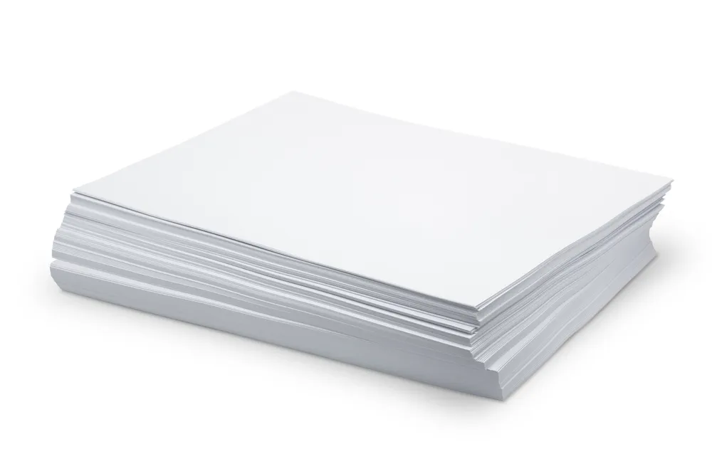
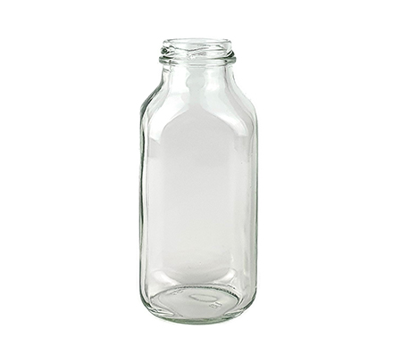
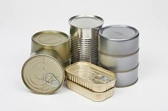
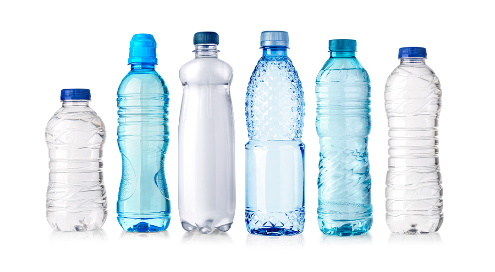
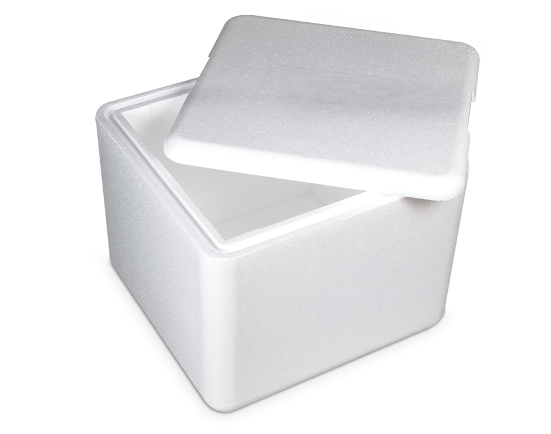
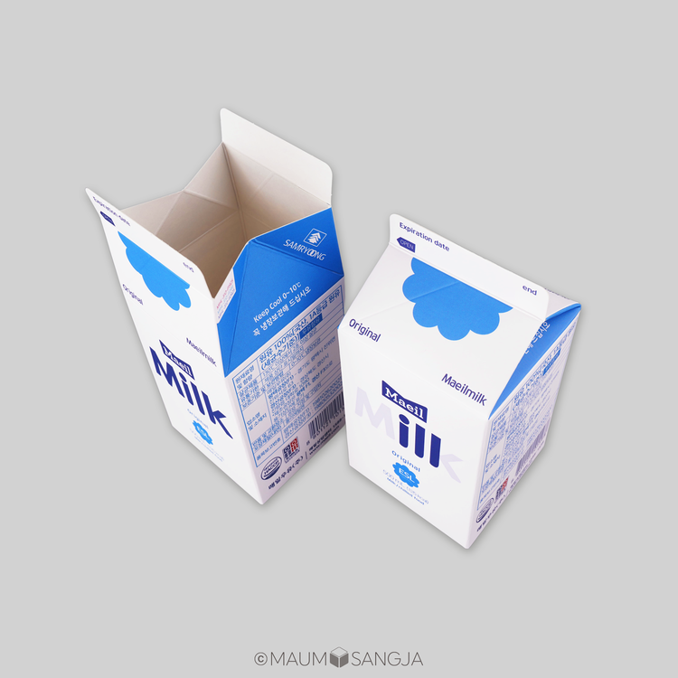
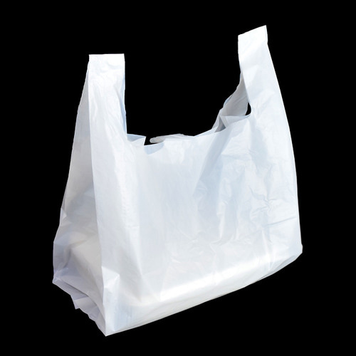
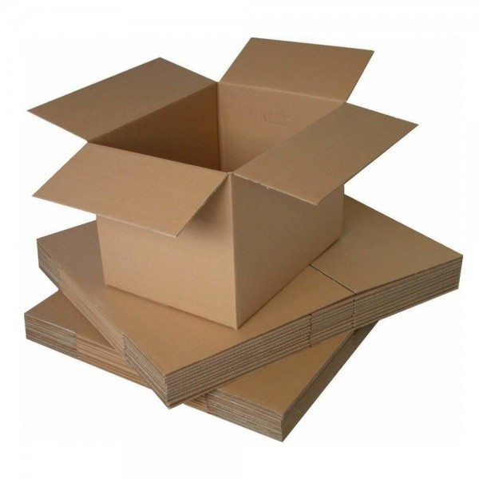

게시판
분리수거, 어떻게 해야 하나요?
2024. 11. 25. 16:35
1. 종이류

① 물기에 젖지 않도록 하고, 반듯하게 편 후 묶어서 배출한다.
② 비닐이 코팅되어 있는 표지나 테이프·공책의 스프링 등은 반드시 제거 후 배출한다.
③ 비닐 코팅된 종이는 재활용되지 않으므로 종량제 봉투로 배출한다.
⚠️ 종이로 배출하면 안 되는 품목 ⚠️
영수증, 오염 물질이 묻은 종이, 폐휴지, 합성수지, 비닐코팅지
2. 유리병
유리병 속 이물질을 깨끗이 제거한 후 뚜껑을 분리하여 배출한다.
3. 금속캔
① 캔 속 이물질을 제거한 후 가능한 한 압착하여 배출한다.
② 부탄가스나 살충제와 같은 용기는 플라스틱 부분을 제거한 후 구멍을 뚫어 배출한다.
4. 페트병
① 무색 투명 페트병 : 내용물을 깨끗이 비우고 부착상표를 제거한 후 뚜껑을 닫아 배출한다.
⚠️ 이때, 플라스틱류와 분리하여 배출해야 한다. ⚠️
② 유색 페트병 : 플라스틱으로 배출한다.
※ 뚜껑과 병 입구의 링은 제거하지 않아도 됨 ※
5. 스티로폼
① 부착상표, 비닐 테이프 등은 반드시 제거하여 배출한다.
⚠️ 부착상표와 비닐 테이프 등이 붙어있을 경우, 수거가 불가함 ⚠️
② 컵라면 용기는 반드시 깨끗이 씻어서 배출한다.
③ 깨끗한 가전제품 포장재, 깨끗이 닦은 컵라면 용기만 재활용이 가능하고, 기타 스티로폼은 특수 마대로 배출한다.
6. 우유팩
①내용물을 비우고 물로 헹군 후, 펼치거나 압착하여 종이류와는 따로 묶어 배출한다.
-> 우유팩은 비닐코팅 재질이므로 종이류로 분리배출 시 재활용할 수 없음.
※ 두유팩 및 멸균팩
- 종이처럼 보이지만 안쪽에는 플라스틱 필름과 알루미늄이 덧대어져 있다.
- 내용물을 헹구고 펼쳐 말린 후 종이로 분리배출해야 한다.
- 학교에서는 잘 헹구지 않고 바로 버리는 경우가 많기 때문에 일반쓰레기로 분리배출해야 한다.
7. 일회용 비닐
라면 봉지, 과자 봉지, 세제 봉지 등 속이 보이는 일회용 비닐봉지에 넣어 흩어지지 않도록 묶어서 배출한다.
※ 물에 젖으면 재활용이 안 되므로 비 오는 날에는 배출 금지 ※
※ 일회용 비닐봉지 안에 있는 이물질과 물기를 완전히 제거하고 배출 ※
8. 택배 상자
상자에 붙은 테이프와 송장 스티커를 제거한 후 펼쳐서 분리배출한다.